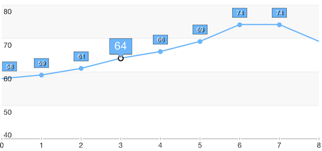

Point Labels: Customization
TKChart lets you customize point labels using TKChartPointLabelStyle’s properties. However, sometimes you may need to draw specific shapes for the labels. In such cases you should sublcass TKChartPointLabel to create your own label and implement TKChartDelegate to use it.
Customization using TKChartPointLabelStyle properies
Here is an example how to customize point labels changing TKChartPointLabelStyle settings.
Objective-C
lineSeries.style.pointLabelStyle.textHidden = NO;
lineSeries.style.pointLabelStyle.layoutMode = TKChartPointLabelLayoutModeManual;
lineSeries.style.pointLabelStyle.labelOffset = UIOffsetMake(0, -20);
lineSeries.style.pointLabelStyle.insets = UIEdgeInsetsMake(-1, -5, -1, -5);
lineSeries.style.pointLabelStyle.font = [UIFont systemFontOfSize:10];
lineSeries.style.pointLabelStyle.textAlignment = NSTextAlignmentCenter;
lineSeries.style.pointLabelStyle.clipMode = TKChartPointLabelClipModeVisible;
lineSeries.style.pointLabelStyle.textColor = [UIColor whiteColor];
lineSeries.style.pointLabelStyle.fill = [TKSolidFill solidFillWithColor:[UIColor colorWithRed:108/255.0 green:181/255.0 blue:250/255.0 alpha:1.0]];
lineSeries.style.pointLabelStyle.stroke = [TKStroke strokeWithColor:[UIColor blackColor]];
lineSeries.style.pointLabelStyle.blurRadius = 1.5;
lineSeries.style.pointLabelStyle.shadowColor = [UIColor blackColor];
lineSeries.style.pointLabelStyle.shadowOffset = CGSizeMake(2, 1);
Swift
lineSeries.style.pointLabelStyle.textHidden = false
lineSeries.style.pointLabelStyle.layoutMode = TKChartPointLabelLayoutMode.Manual
lineSeries.style.pointLabelStyle.labelOffset = UIOffsetMake(0, -20)
lineSeries.style.pointLabelStyle.insets = UIEdgeInsetsMake(-1, -5, -1, -5)
lineSeries.style.pointLabelStyle.font = UIFont.systemFontOfSize(10)
lineSeries.style.pointLabelStyle.textAlignment = NSTextAlignment.Center
lineSeries.style.pointLabelStyle.clipMode = TKChartPointLabelClipMode.Visible
lineSeries.style.pointLabelStyle.textColor = UIColor.whiteColor()
lineSeries.style.pointLabelStyle.fill = TKSolidFill(color: UIColor(red: 108/255.0, green: 181/255.0, blue: 250/255.0, alpha: 1.0))
lineSeries.style.pointLabelStyle.stroke = TKStroke(color: UIColor.blackColor())
lineSeries.style.pointLabelStyle.blurRadius = 1.5
lineSeries.style.pointLabelStyle.shadowColor = UIColor.blackColor()
lineSeries.style.pointLabelStyle.shadowOffset = CGSizeMake(2, 1)

Custom point labels
Subclassing TKChartPointLabel lets you perform custom drawing and calculate the size of the point label. Once you create your own label you should implement TKChartDelegate to use it.
Objective-C
- (TKChartPointLabel *)chart:(TKChart *)chart labelForDataPoint:(idTKChartData)dataPoint inSeries:(TKChartSeries *)series atIndex:(NSUInteger)dataIndex
{
if (series.index == _selectedSeriesIndex && dataIndex == _selectedDataPointIndex) {
return [[MyPointLabel alloc] initWithPoint:dataPoint style:series.style.pointLabelStyle text:[NSString stringWithFormat:@"%@", dataPoint.dataYValue]];
}
return [[TKChartPointLabel alloc] initWithPoint:dataPoint style:series.style.pointLabelStyle text:[NSString stringWithFormat:@"%@", dataPoint.dataYValue]];
}
Swift
func chart(chart: TKChart!, labelForDataPoint dataPoint: TKChartData!, inSeries series: TKChartSeries!, atIndex dataIndex: UInt) -> TKChartPointLabel! {
if series.index == selectedSeriesIndex && dataIndex == selectedDataPointIndex {
return MyPointLabel(point: dataPoint, style: series.style.pointLabelStyle, text: "\(dataPoint.dataYValue())")
}
return TKChartPointLabel(point: dataPoint, style: series.style.pointLabelStyle, text: "\(dataPoint.dataYValue())")
}
